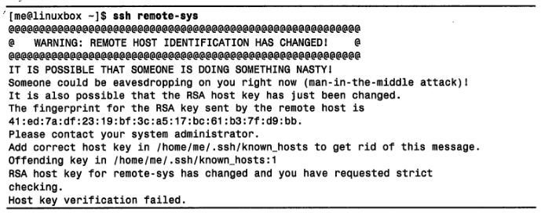
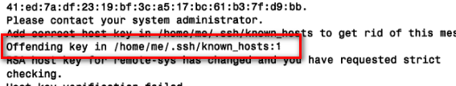

1. 网络相关命令
1.1. ping
send ICMP ECHO_REQUEST to network hosts
向网络主机发送特殊数据包
发送 ICMP ECHO_REQUEST 数据包
ping 连接成功表明网络各组成成员(接口卡、电缆、路由和网关)总体处于良好工作状态
1.2. traceroute
print the route packets trace to network host
跟踪网络数据包的传输路径
显示文件通过网络从本地系统传输到指定主机过程中所有停靠点的列表
结果说明
- 对于那些提供身份信息的路由器，将显示这些信息
- 对于那些不提供身份信息的路由器，将以星号行表示
1.3. tracepath
traces path to a network host discovering MTU along this path
- 与 traceroute 类似
1.4. netstat
Print network connections, routing tables, interface statistics, masquerade connections, and multicast memberships
检查网络设置及相关统计数据
-ie- 检查系统中的网络接口信息
- 类似 ifconfig
-r
- 显示内核的网络路由表。此表显示了网络之间传送数据包时网络的配置情况
1.5. ftp
使用 FTP 协议(File Transfer Protocol)传输文件的程序
不安全，明文传输
使用
ftp fileserver
# 在 ftp> 后面输入 help 会显示 ftp 所支持的命令列表
1.6. lftp
Sophisticated file transfer program
- 一个更好的使用 FTP 协议传输文件的程序
1.7. wget
The non-interactive network downloader.
- 非交互式网络下载工具
1.8. rlogin 和 telnet
- 不安全，明文传输(包括用户名和密码)
1.9. ssh
安全登录远程计算机
SSH 协议(secure shell protocol)
SSH协议解决的问题
- 第一：能验证远程主机的身份是否真实，避免中间人攻击
- 第二：该协议将本机与远程主机之间的通信内容全部加密
SSH 协议协议的组成
- 远程主机的 SSH 服务端：用于监听端口 22 上可能过来的连接请求
- 本地主机的 SSH 客户端：用于与远程服务器进行通信
SSH 没有成功验证远程主机
- 两个原因
- 有攻击者正在尝试中间人攻击
- 远程主机在某种程度上改变了。如，重装系统
- 上述第二个原因的解决方法：删除 known_hosts 中的过时密钥(第一行)
- 两个原因


ssh 命令可以直接在远程系统上执行单个简单命令
示例
ssh hostname@username
ssh remote-sys free
ssh remote-sys 'ls *' > dirlist.txt # 重定向到本地主机
ssh remote-sys 'ls * > dirlist.txt' # 重定向到远程主机
1.10. scp
OpenSSH secure file copy
- 安全拷贝文件(secure copy)
# 命令格式
scp source target
# 远程主机需要写明，并使用冒号分隔
scp username@remote-sys:远程路径 本地路径
scp 本地路径 username@remote-sys:远程路径
1.11. sftp
ftp 的安全版本(secure ftp)
使用上与 ftp 类似，只是使用 ssh 加密隧道传输信息
不需要远程主机运行 FTP 服务，仅仅需要 SSH 服务即可
- 也就是说 SSH 服务，可以当 FTP 服务使用，而且还是 Secure FTP
Windows 上的 SSH 客户端
- 一般使用 PuTTY，支持 scp 和 sftp
1.12. rsync
a fast, versatile, remote (and local) file-copying tool
远程文件、目录的同步
针对类 UNIX 系统, 完成同步任务最台适的工具当属 rsync。
rsync 命令通过运用 rsync 远程更新协议, 同步本地系统与远程系统上的目录。
rsync 远程更新协议允许 rsync 命令快速检测到本地和远程系统上两个目录之间的不同, 从而以最少数量的复制动作以完成两个目录之间的同步。因此, rsync 命令与其他复制命令相比速度非常快。
命令格式
rsync options source destinationsource和destination可以是- 一个本地文件或目录
- 一个远程文件或目录, 形式为
[user@]host:path - 一个远程 rsync 服务器, 由
rsync://[user@]host[:port]/path指定
source和destination中必须有一个本地文件, rsync 不支持远程系统与远程系统之间的复制。- 常用选项
-a：用于归档，它会保留文件属性-v：输出详细信息--delete：移除那些残留于备份设备中而源设备中已经不存在的文件, 这个选项在第一次备份时无关紧要, 但在后续的复制操作中会起作用。
远程复制的两种实现方式
- 方式一
- 针对已安装了 rsync 命令以及诸如 ssh 等远程 shell 程序的系统。
- 假定本地网络有另外一个具有足够可利用硬盘空间的系统, 同时希望利用远程系统而非外部设备进行备份操作。
- 假使远程系统已经有一个用于存放备份文件的 /backup 目录, 那么可以直接运行这条命令(remote-sys 为远程主机名)
- 方式二
- 使用 rsync 服务器同步网络文件, 通过配置 rsync 运行一个守护进程监听进来的同步请求。
- 方式一
sudo rsync -av --delete --rsh=ssh /etc /home /usr/local remote-sys:/backup